User Research
During user research, two methods were used
1
2
User interview + focus group
Participant observation
user interview + focus group
We immediately contacted some friends who had experience watching either on Netflix, or other streaming services like HBO Now, Disney+ or Apple TV+, and asked them about what they think about current Netflix sharing experience.
"Imagine your Goth friend’s liking of The Notebook or your co-worker’s viewing of Fifty Shades of Grey as these were posted to their newsfeed. Dude.... that was like... soooo embarrassing.... I still wanna share with some of my friends, just... in a more subtle way"
Interviewee 1, age 24, male
"Often I just want to share my Netflix experience with certain people, like my boyfriend. But right now Netflix only allows for sharing via link plus random scenes or sth. So boring!"
"Sharing on Facebook?? Yuck. Gosh, that was like so grandpa thing."
Interviewee 2, age 16, female
"I want to talk about a certain thing that I want to share. Sometimes I'd completely forgotten what I have watched years ago. It's often the case that I started watching for some time before realizing I have already watched the documentary/show years ago. I would love to look back on the history of shows I have watched and share it not only to my friends, but the future me as well."
Interviewee 3, age 34, male
In talking with users, we’ve discovered:
1
People's discomfort when it comes to exposing viewing activity with others. But they do have the need to share to maybe a certain range of people. They need a more subtle, yet more fun way of sharing.
2
People also want a place of self-reflection on watched TV shows/movies.
Participant observation
By asking people to showcase how they socialize with friends and share Netflix-related information to them, I have discovered user flow obstacles illustrated below.
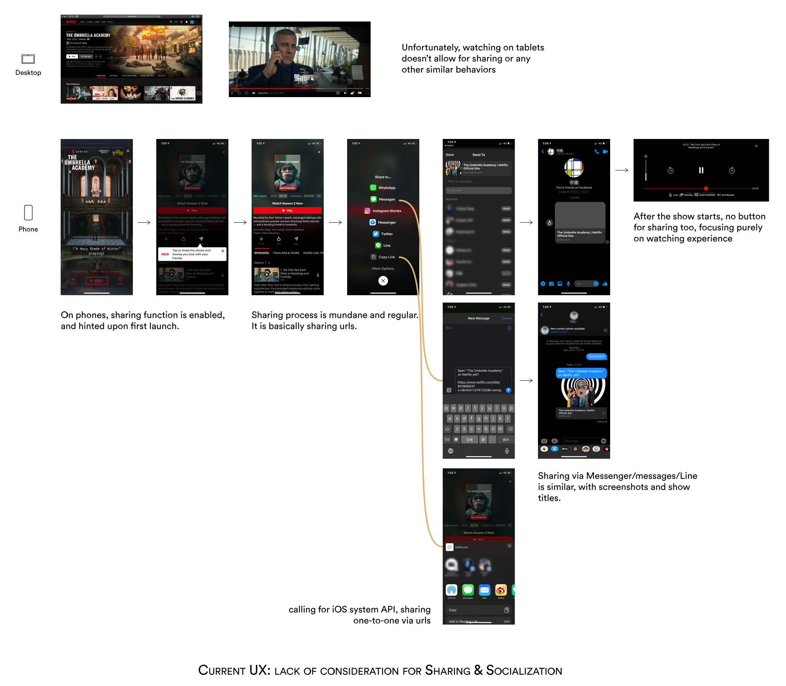
Problems
Through research and analysis, we have identified two problems:
Dull sharing experience
1
The current Netflix experience sharing process lacks empathy, users cannot grasp what's fun or what to look at beside basic info like names when people had sent you the url, and the sharing process is dull and simple.
2
Need for self-reflection
Users want something to reflect on, explore and show his own very unique identity.
🙋 How might we improve the dull experience of Netflix sharing?
🙋 How might we build a mental model for users to not only share but self-reflect and self-amuse?
Design principles
1
2
3
4
Independent rather than integration with netflix
The full experience journey design of online watching
The metaphors, the gamifications
Immersiveness, keep simplicity
Thus, to redesign the full experience of Netflix online watching
Thus, to intrigue users without provoking social awkwardness
Thus, users can be immersed in the app, fully engage with other users without disturbance and be back regularly
1. independent rather than integration with netflix
If you search on Google/Pinterest/Dribbble, you will find tons of Netflix redesign aiming at adding functions to current Netflix platform. However, Netflix app should adhere to its core: watching, rather than being attached too much distracting functions to. Extra functions given to Netflix will make it bloated and users can be easily distracted. In this way, some users who prefer to be private can focus on watching, while users who haven't purchased Netflix yet can also explore what others have watched in Galaxy.
Therefore, I designed this new app Galaxy to not be part of and deeply integrated with Netflix, but rather independent and interact closely with Netflix.
2. Creating The full experience journey design of online watching
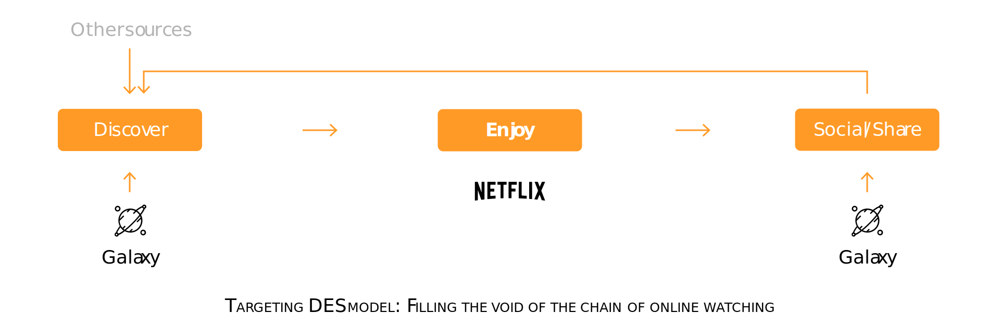
The experience of online watching on Netflix is not just simply launch Netflix and watch. Rather, people will first discover shows, enjoy them, and talk/share about their feelings with people because sharing is a human nature (D, J., & J, P. L. 2004). While Netflix focus on the Enjoy part, Galaxy focuses on helping people discover and socialize.
3. How to gamify? 👉 The metaphor of 'planet' and 'galaxy'
It was at this moment that we came up with the idea of gamification and made the metaphor that everyone is just like a little planet floating in the infinite universe. Each and every one of them is unique. Sometimes they become closer and become friends, that's when a galaxy is formed.
Also, we want to provide users interactions with different intimacy, so you can not only socialize with acquaintance but close friends as well. We enable interactive behaviors between users and their friends by either a non-intrusive knock-knock, or sharing favorite clips together, or even creating a collective memory by watching movies/TV series together.
Real
metaphor
1
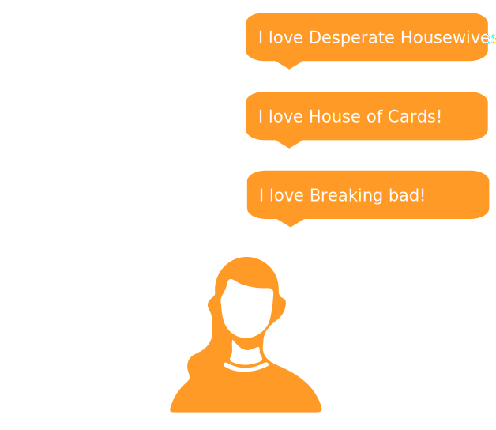
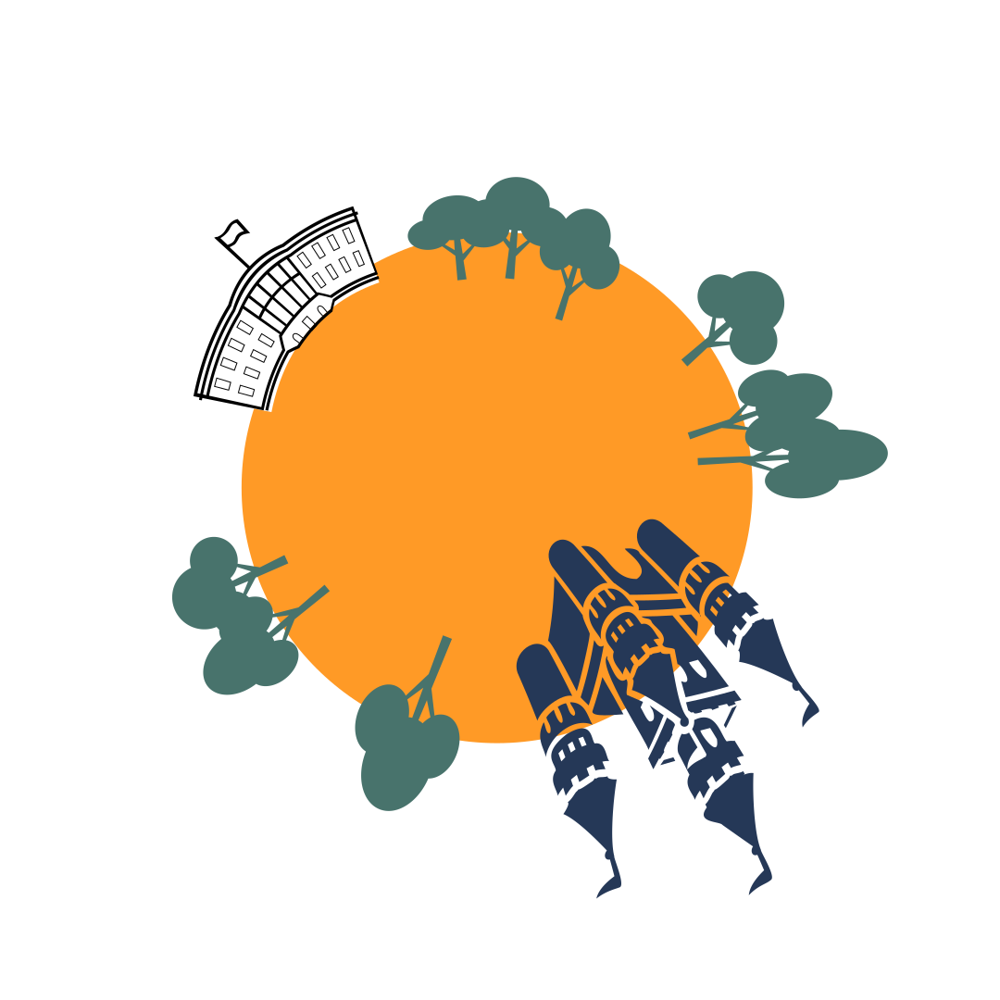
an individual
a planet
2
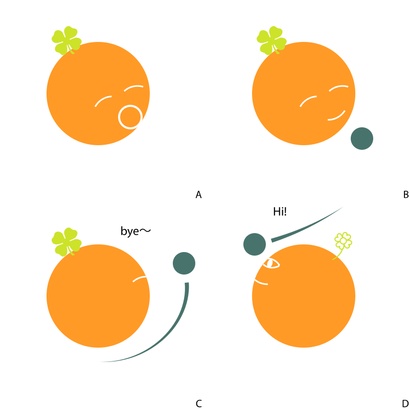
people start a conversation by a few words or by a collective interest
a comet/satellite forms and visits
3
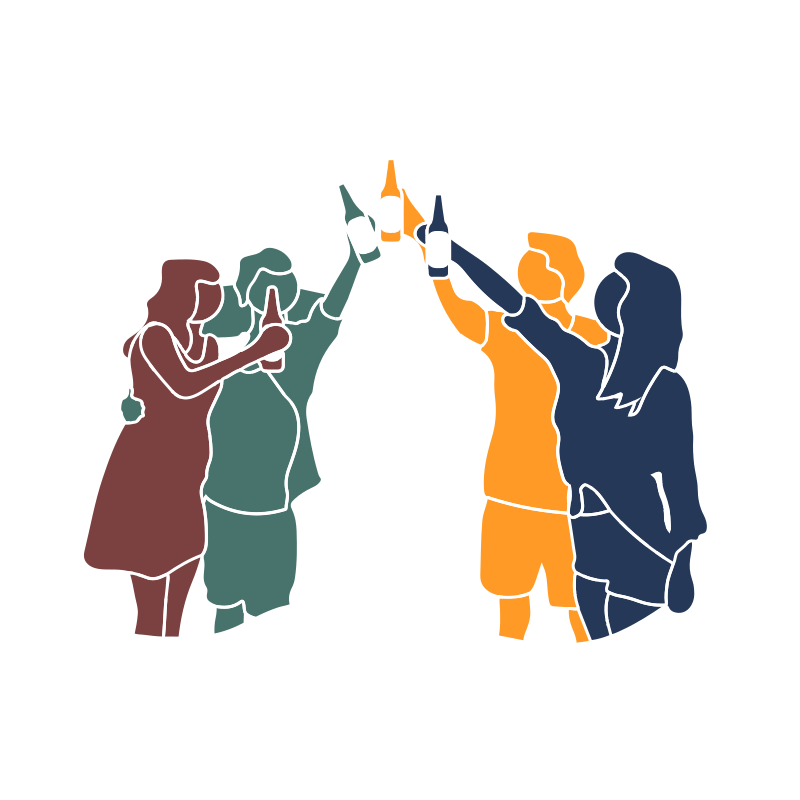
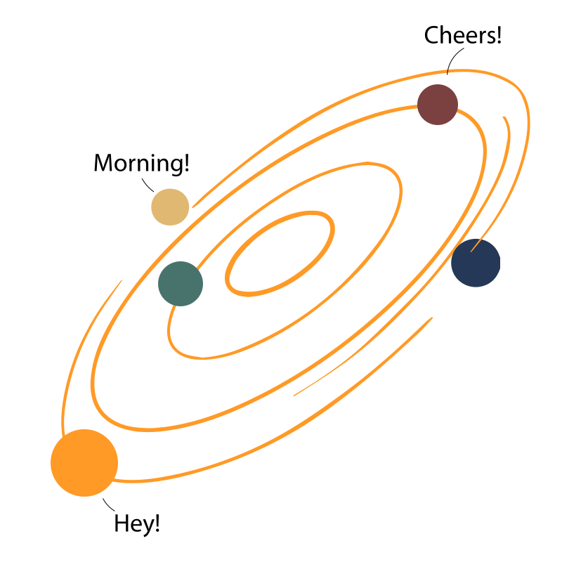
become friends
form a galaxy
4
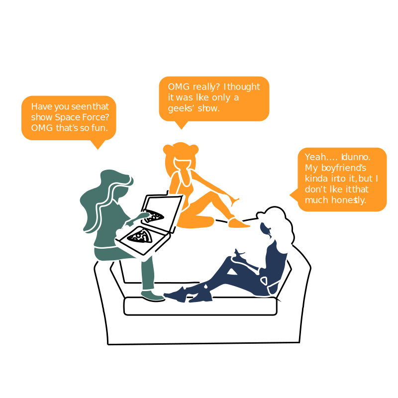
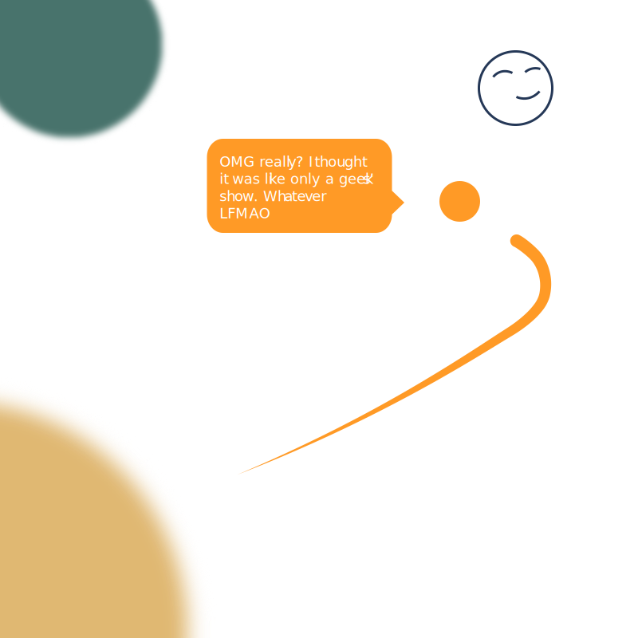
friends talking/sharing
a satellite carrying information
5
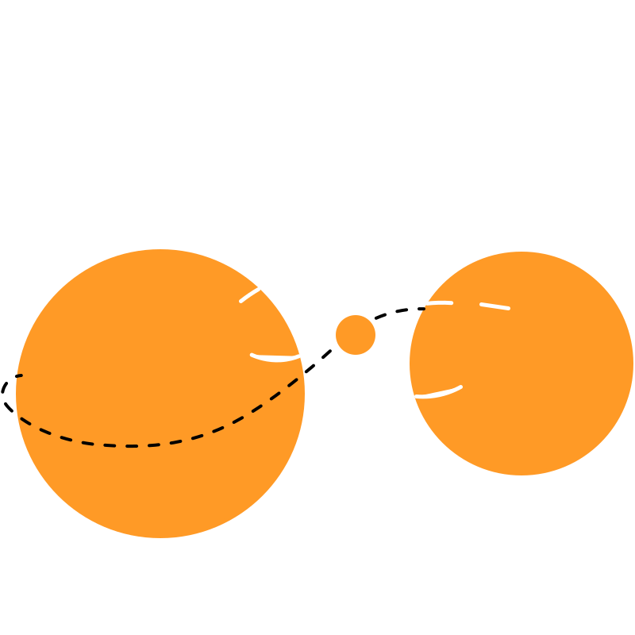
people sharing/enjoying a collective memory
a collective tiny planet revolving around two planets
After several iterations and discussions, we have settled how the architecture of our web app can be. It was sketched and scribbled and I prefected it afterwards.
👉 Entrance from Netflix to Galaxy
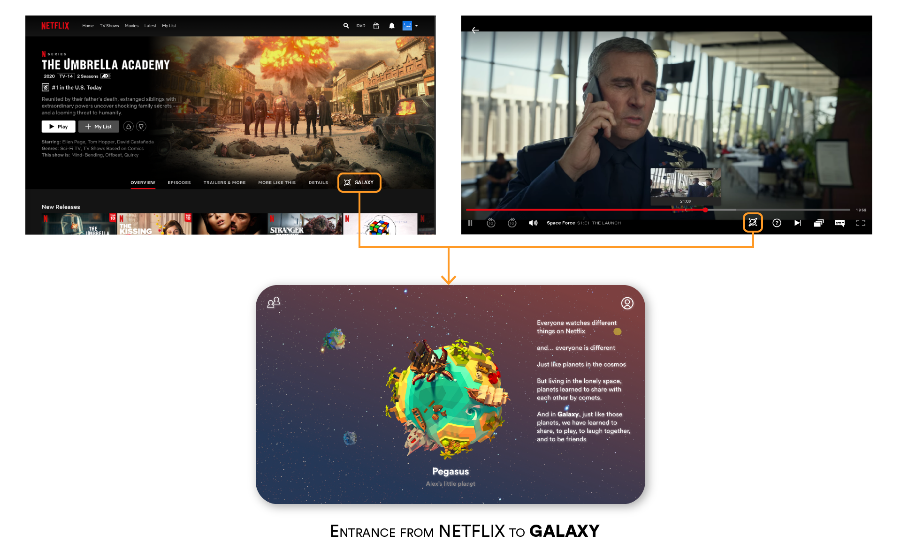
👉 Planet, as a mental model for individuals
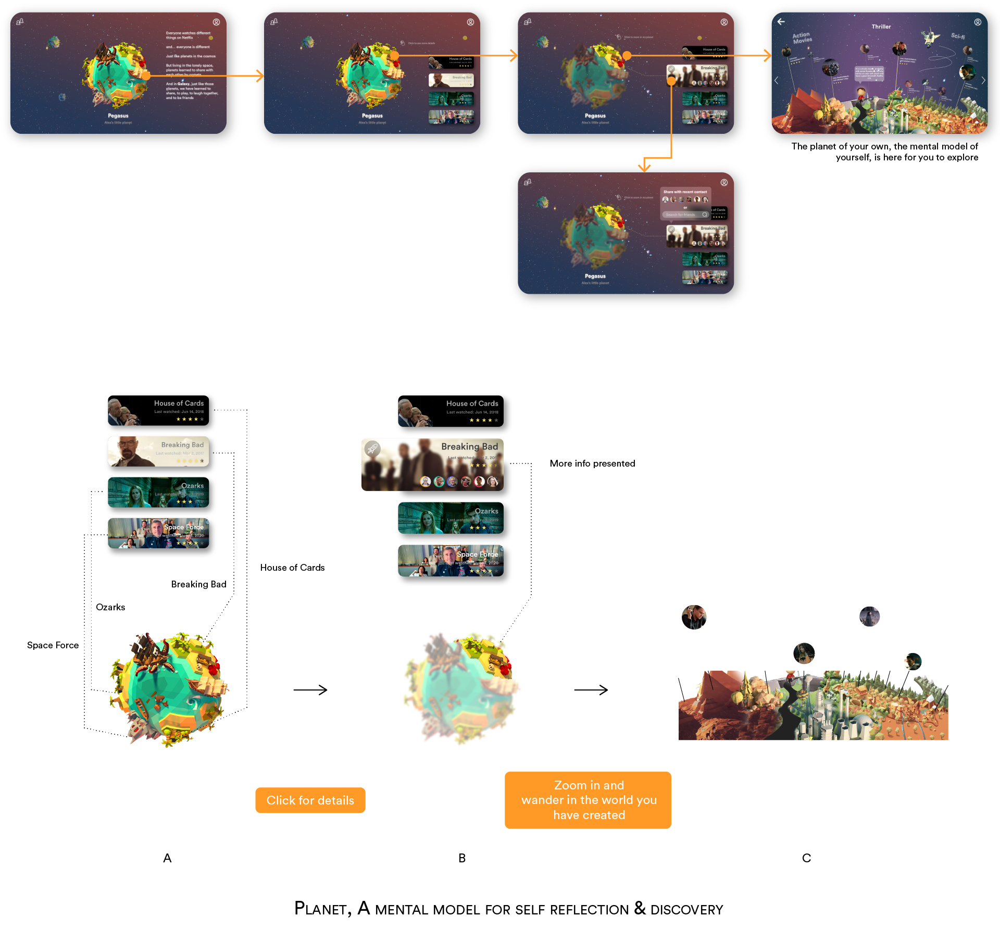
Exploring your own planet
👉 Galaxy, formed by planets, as a gamified sharing experience
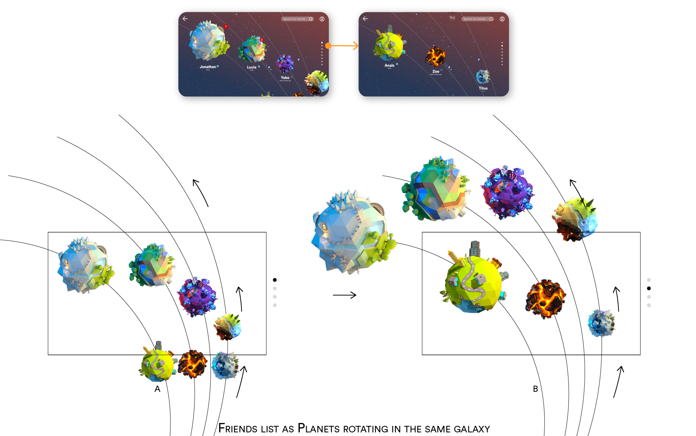
Checking out friends' list in the form of galaxy
👉 And, different ways of socialization, in reeeeeally fun ways!
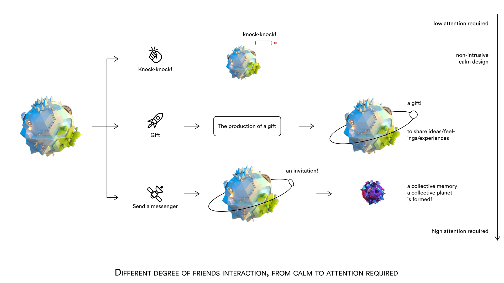
🤙 Knock-Knock: Hi there! Nice to meet you!
Knock knock!
🤙 Gift: Wassup! Here is what I think...
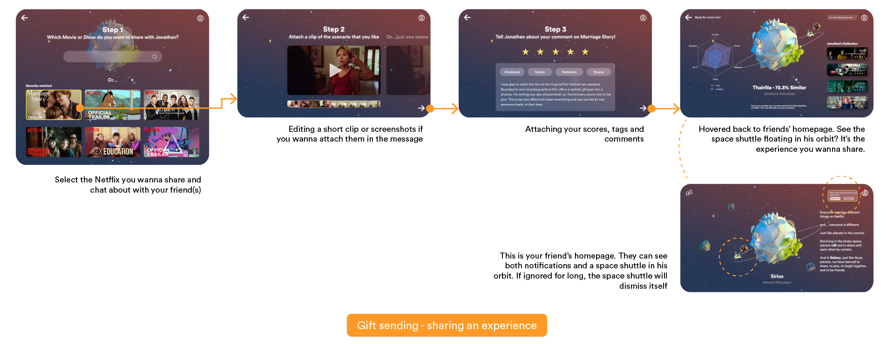
🤙 Send a messenger: A collective memory
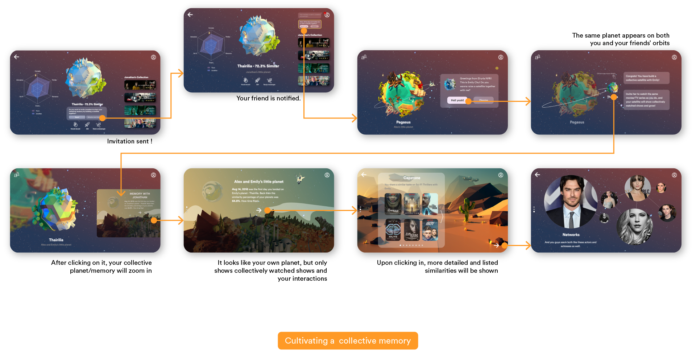
Checking out friends' activities
Seeing the collective planet and the collective watching experience